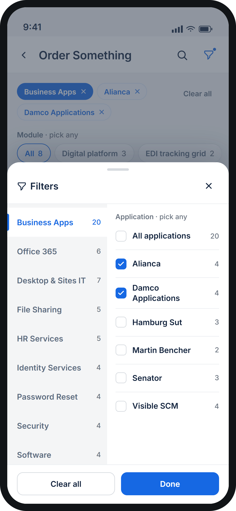
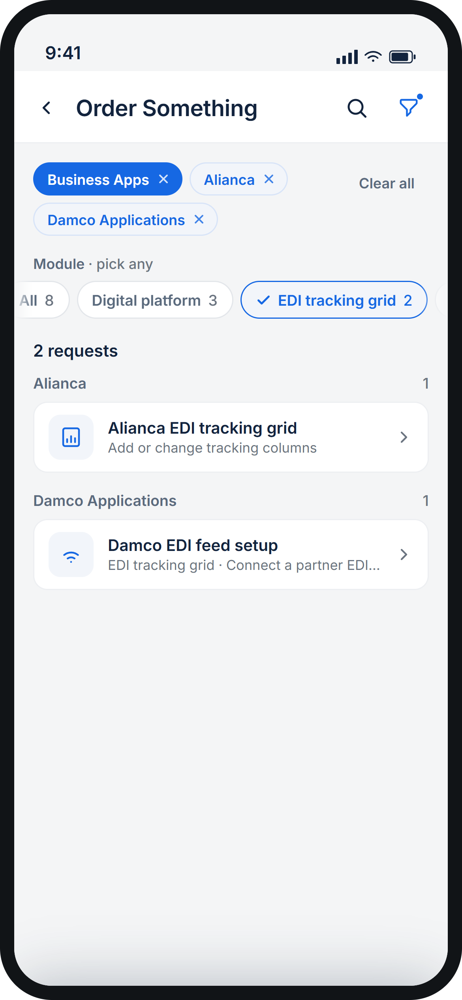
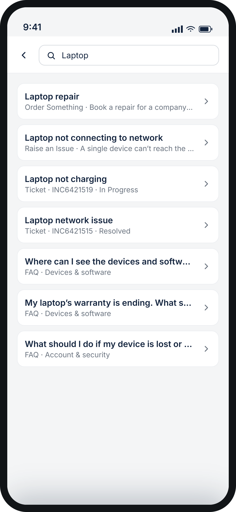
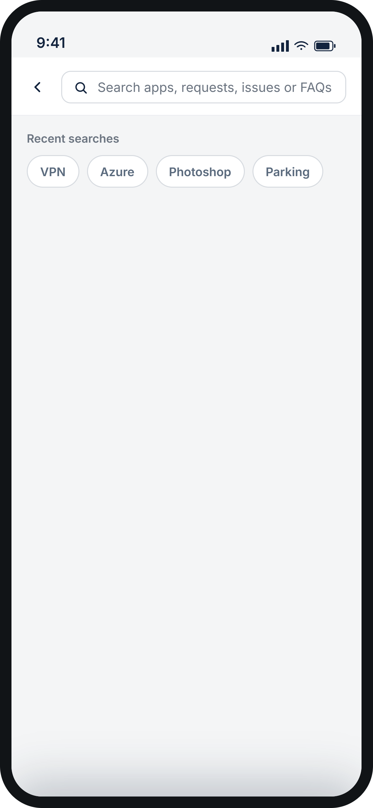
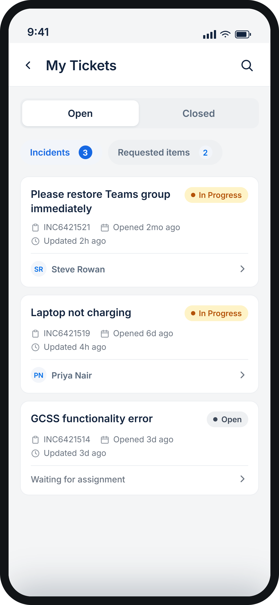

UI Design
UX Research
Competency Assessment Tool
Designed a web application that streamlines competency assessment for a large enterprise organization.
View CaseEmployees at Blue Harbor had to manually raise a ticket in ServiceNow for almost anything — software access, a broken laptop, a simple question. I designed the Employee Portal Application (EPA): a mobile app that replaces that manual process with an automation-first experience, resolving requests in a tap instead of a form.
*Blue Harbor is a fictional client name used to protect confidentiality.
As a Designer at TCS Interactive, I designed the Employee Portal Application — a mobile app that makes IT requests easier for everyone at Blue Harbor. Instead of filling out a form, employees raise requests or report issues through a smart, automation-first flow that can grant access to software or services with a single tap.
Replace the manual ServiceNow ticketing process with a modern, self-serve mobile experience.
Use automation to resolve common requests instantly instead of routing everything to a support queue.
Ticketing ran entirely through ServiceNow: employees manually created a ticket for every request, and support teams manually fulfilled each one. Ticket volume was resolved almost entirely by hand.
To understand the existing ticket-raising journey end to end, I raised several tickets myself through ServiceNow and mapped the pains and gains into a Customer Journey Map — the foundation the interview questions were built on.
Target user — End user
An end user here is any Blue Harbor employee trying to fulfill an IT request — across departments, roles, and technical comfort levels.
Interviews were conducted to find out the peaks and pits in the experience of raising a ticket through the existing web portal (ServiceNow), and to uncover behavior patterns around ticket raising — what motivated people, and what held them back.
4End users interviewed, across departments and technical comfort levels.
2Admins interviewed, who fulfil and route tickets day to day.
Quotes from the interviews were mapped into clusters. Several rounds of clustering surfaced the problem areas below.
Form Filling
Ticket Tracking
Ticket Raising
Admin
Lack of Knowledge
New employees had to submit multiple separate tickets just to request the access they needed on day one.
Even keyword search surfaced too many options, and there was no dashboard to guide people to the right one.
Employees repeatedly filled near-identical forms to request access to different software or services.
Most tickets could have been fixed by the user in a few steps — but with no guidance, they raised a ticket instead.
Users frequently raised the wrong category of ticket after too many steps on ServiceNow.
Defining the design goals and structuring a solution — five goals shaped every screen that followed.
Search, intuitive navigation and organized content get employees to the right ticket quickly.
Quick access to Raised Tickets, My Approvals and Order Something is obvious, not hidden.
Interactive widgets and small playful touches keep employees engaged with the app.
The app adapts to individual roles and preferences, surfacing what's relevant to that person.
Discoverability and affordance only matter if employees can act on them with minimal effort.
Several rounds of design were shared with stakeholders, who gave feedback on overall impression, usability, and how difficult each direction would be to implement.

Inside the app
In the old flow, raising a ticket meant first choosing between "Order Something" or "Raise an Issue," then picking from a long list under whichever section — so users frequently ended up selecting the wrong ticket. I iterated heavily on bottom navigation so every core function a user comes to EPA for is one tap away, with first-level categorization built into the nav itself.
To ensure employees can quickly find what they're looking for, I went through several iterations of the bottom navigation. My goal was to make the key functionalities users come to EPA for easily accessible directly from the bottom navigation, eliminating the need to search through multiple screens to find a specific feature.

When something breaks for the whole company, like a VPN slowdown, people tend to raise the same ticket again and again. I placed live incident cards at the very top of Home, so users see the problem before they go looking for help. Instead of raising a duplicate ticket, they can tap "I'm affected too", and IT can see the real impact straight away.
Employees used to have no single place to see what IT had given them. I added a My IT card on Home that shows how many devices they have and how many need action. One tap opens My IT, where their software and devices are listed together.
Employees often learn a licence has expired or a warranty is ending only when something stops working. I show their software and devices on Home, with items needing attention first and marked plainly, like "Access expired". A toggle keeps the list short.
People raise a ticket and then have no idea what happened to it. I bring tickets onto Home, split into Incidents (broken things) and Requested items (things they asked for). Each card shows status, ticket number and last update. "Show All" opens the full list.
In the old version, people had to choose the ticket type before they could find anything. I put a small catalogue window on Home, with Access, Order and Issue as tabs, so users can find the ticket upfront. The sub-categories are there by judging what the user might need, and one tap starts a request, without browsing a long catalogue.
From the data, it was observed that in most cases users raise a ticket for a device issue or for software they already have access to. Previously these tickets lived inside Order Something and weren't handy, with many touchpoints in the journey — so EPA gives them a completely different, dedicated section.

My IT is where employees manage everything assigned to them, split into Software and Devices tabs. On the Software tab, three tiles at the top show how many apps they have, how many need action and how many have updates waiting. Each tile also works as a filter, so one tap shows just that group. The list puts anything with a problem first, marked with a plain label such as "Access expired", "Licence expiring" or "Certificate expiring". Under each app, the expiry date sits next to a single action button, like Renew access, so a problem can be fixed from the list without raising a ticket. Tapping an app opens its details, including a shortcut to report an issue with it.

The Devices tab lists every device assigned to the employee, such as their laptop, tablet, phone and monitor, with details like model, storage and serial number. The tiles at the top count how many are assigned, how many need action and how many are healthy. Devices with a problem come first.
Many tickets didn't need a form at all, but users still had to fill one in to raise them. Under Access, I listed every ticket that needs no form, so the user can raise it with one tap on Request Access.
The Access page opens with the most requested apps, then lets users browse by category, see what their teammates have, and check what suits their role. As the video shows, the user scrolls to explore, uses the filter to narrow to a category such as Business Apps, and taps Request on the software they need. The button turns to "Requested" and a confirmation appears, so the whole request takes one tap.
The Order Something and Report Issue sections hold all the tickets that used to live under the same two options in ServiceNow.
With so many possible issues, users used to struggle to find the right one. On Report Issue they narrow it down in three steps: a category, then the area or app, then the kind of problem. As the video shows, tapping an issue opens a short chat that tries quick fixes first. If the problem stays, it raises the ticket for them with their answers already attached, so there is no form to fill in.

Support is a chat that replaces the forms. The assistant greets the user and offers the five most common needs: raise an access request, raise a request, report an issue, track your tickets, or call local IT support. Users can tap an option or just type what they need, such as "VPN". The assistant asks a few short questions, tries quick fixes where it can, and raises the ticket for the user with their answers attached. The Support tab is reachable from the bottom navigation, so help is one tap away from any main screen.
I used filters to help users reach the right ticket by narrowing a large list down to a few relevant results. The filter has three stages, and each choice changes what appears in the next one, so users only see options that lead to real tickets.

Stage 1
The user starts by choosing a category, such as Business Apps or Office 365. Each one shows how many requests it holds, so people can see the size of the list before they open it.

Stage 2
Once a category is chosen, only its applications appear, and several can be ticked at once. The counts update as the user picks, and the matching requests already show behind the sheet.

Stage 3
On the page itself, chips list the modules for the chosen applications, such as "EDI tracking grid".
Search helps employees find what they need without browsing. They can type a keyword or a ticket number, and results appear as they type.


Search opens with the user's recent searches, so repeat lookups are one tap. As they type, results appear straight away and cover everything in the portal: apps to request access to, things to order, issues to report, their own devices and software, their tickets and FAQ answers.
On ServiceNow, users found raising a ticket tedious and repetitive. They had to fill in a form every time, often entering the same information more than once. Admin interviews also showed that users could fix many issues themselves in a few steps. They weren't aware of those steps, so they raised a ticket instead.
In the new version, there is no form. The user opens Support and meets a smart chatbot, and taps Report an issue. They pick what is going wrong and answer a few short questions, and the chatbot walks them through quick fixes, the same steps admins said users didn't know about. If the problem stays, the chatbot raises the ticket for them.
 Notification
Notification
 Profile
Profile

My TicketsThis case study covers the fundamental screens within the limits of space — there are more supporting flows and edge cases in the full product that aren't included here.
Simplifying an intricate ticketing workflow for users, without losing functionality for admins, was a core skill this project sharpened.
Structuring and organizing information to genuinely improve discoverability — not just reorganize it — took real iteration.
Tailoring the experience to individual roles and preferences meant designing adaptive interfaces, not one fixed layout.
Explore Other Work
Designed a web application that streamlines competency assessment for a large enterprise organization.
View CaseDesigned the seamless integration of AI and Augmented Reality into a mobile-friendly learning experience.
View CaseImproved usability of the eQ Technologies canvas, keeping design-system constraints and cross-product consistency intact.
View CaseContact
Have a project in mind, or just want to say hi? My inbox is always open.